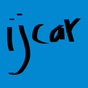

19 papers:
 SAC-2015-StracciaM #concept #estimation #fuzzy #learning #named #owl #probability #using
SAC-2015-StracciaM #concept #estimation #fuzzy #learning #named #owl #probability #using- pFOIL-DL: learning (fuzzy) EL concept descriptions from crisp OWL data using a probabilistic ensemble estimation (US, MM), pp. 345–352.
 RTA-2015-BaaderBM
RTA-2015-BaaderBM- Dismatching and Local Disunification in EL (FB, SB, BM), pp. 40–56.
 VLDB-2014-LiagourisT #identification #knowledge base #owl #performance
VLDB-2014-LiagourisT #identification #knowledge base #owl #performance- Efficient Identification of Implicit Facts in Incomplete OWL2-EL Knowledge Bases (JL, MT), pp. 1993–2004.
- IJCAR-2014-MartinezFGHH #ontology
- EL-ifying Ontologies (DC, CF, BCG, PH, IH), pp. 464–479.
 KR-2012-BaaderBM #towards #unification
KR-2012-BaaderBM #towards #unification- Extending Unification in EL Towards General TBoxes (FB, SB, BM).
- KR-2012-KazakovKS #logic #product line #reasoning
- Practical Reasoning with Nominals in the EL Family of Description Logics (YK, MK, FS).
- KR-2012-LutzSW #approach #approximate #logic
- An Automata-Theoretic Approach to Uniform Interpolation and Approximation in the Description Logic EL (CL, IS, FW).
 CIKM-2011-ChengQ #algorithm #axiom #incremental
CIKM-2011-ChengQ #algorithm #axiom #incremental- An algorithm for axiom pinpointing in EL+ and its incremental variant (XC, GQ), pp. 2433–2436.
- SAC-2011-Blech #encryption #logic #proving #security
- Proving the security of ElGamal encryption via indistinguishability logic (JOB), pp. 1625–1632.
 CADE-2011-BaaderBBM #concept #logic #unification
CADE-2011-BaaderBBM #concept #logic #unification- Unification in the Description Logic EL without the Top Concept (FB, TBN, SB, BM), pp. 70–84.
- KR-2010-PenalozaS #axiom #complexity #logic #on the #product line
- On the Complexity of Axiom Pinpointing in the EL Family of Description Logics (RP, BS).
- IJCAR-2010-MagkaKH #data type #logic
- Tractable Extensions of the Description Logic EL with Numerical Datatypes (DM, YK, IH), pp. 61–75.
 HCI-VAD-2009-UenoHY #education #framework #named
HCI-VAD-2009-UenoHY #education #framework #named- WebELS: A Content-Centered E-Learning Platform for Postgraduate Education in Engineering (HU, ZH, JY), pp. 246–255.
- RTA-2009-BaaderM #logic #unification
- Unification in the Description Logic EL (FB, BM), pp. 350–364.
- KR-2008-Bienvenu #abduction #complexity #lightweight #logic #product line
- Complexity of Abduction in the EL Family of Lightweight Description Logics (MB), pp. 220–230.
- CADE-2007-LutzW #lightweight #logic
- Conservative Extensions in the Lightweight Description Logic EL (CL, FW), pp. 84–99.
 ICEIS-v1-2003-Meziane #information management
ICEIS-v1-2003-Meziane #information management- Information Systems in Medical Imagery: Case of the Hospital of Bab El Oued (AM), pp. 509–511.
- HCI-CC-1997-HuZX #human-computer #interface
- Views on Designing Human-Computer Interface for ELS (WH, WZ, NX), pp. 809–812.
 DAC-1984-GuillaumeK #named #proximity
DAC-1984-GuillaumeK #named #proximity- MINUPROX — an advanced proximity correction technique for the IBM EL-2 electron beam tool (WJG, AK), pp. 452–453.